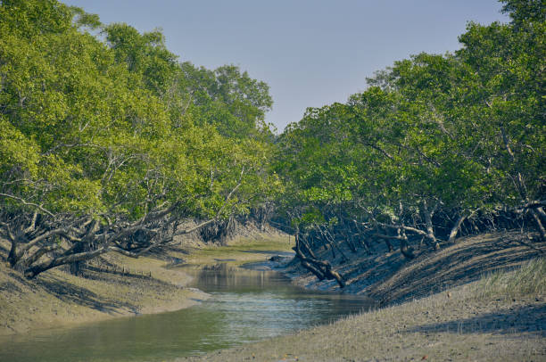
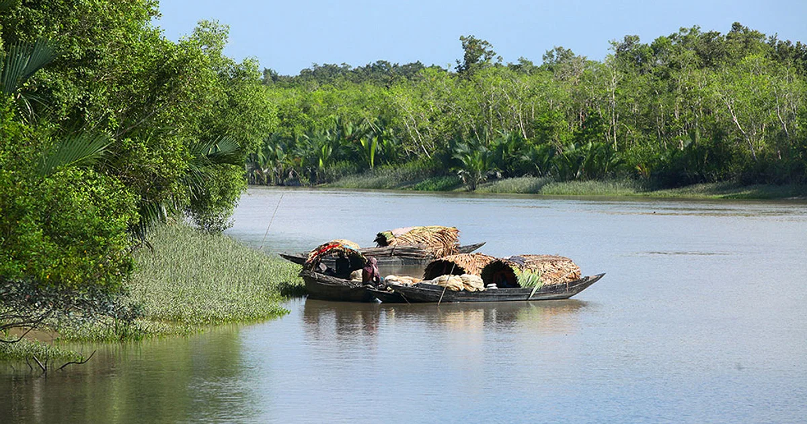
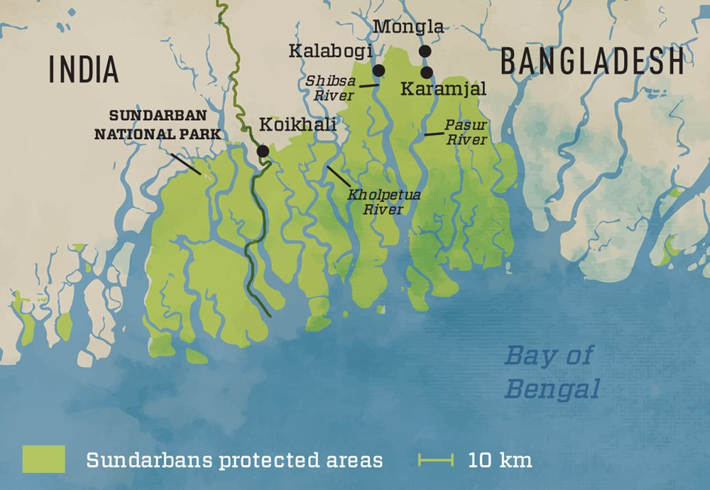
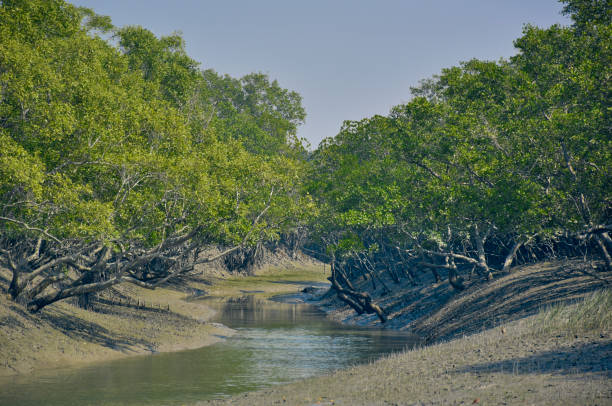
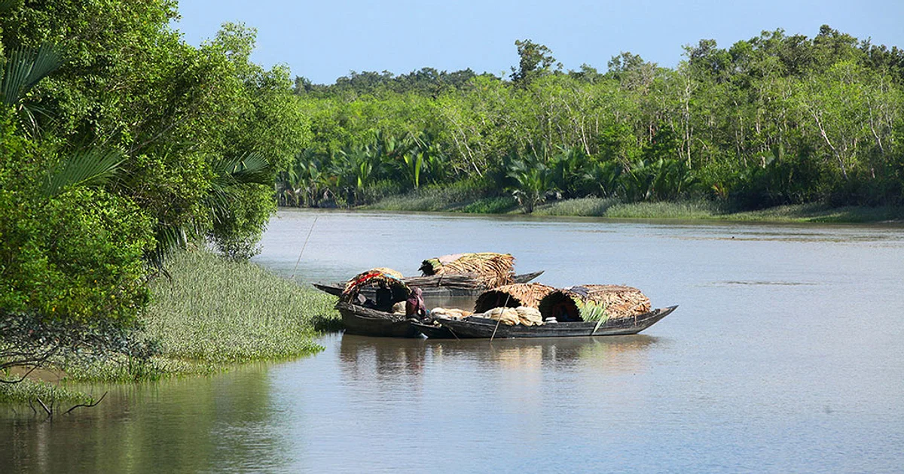
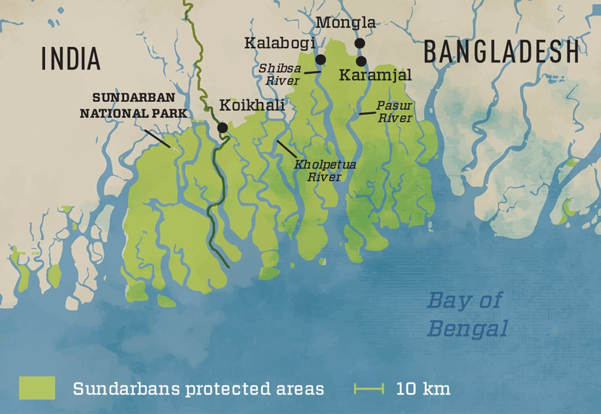

Victoria Memorial
Victoria Memorial, located in Kolkata, is a historical monument built in memory of Queen Victoria. Explore the museum, gardens, and the iconic white marble structure that showcases colonial architecture.


Victoria Memorial, located in Kolkata, is a historical monument built in memory of Queen Victoria. Explore the museum, gardens, and the iconic white marble structure that showcases colonial architecture.
Howrah Bridge, spanning the Hooghly River, is an iconic cantilever bridge in Kolkata. Discover the engineering marvel, enjoy the panoramic views of the city, and witness the hustle and bustle of daily life.


Sundarbans, a UNESCO World Heritage Site, is a mangrove forest in the delta of the Bay of Bengal. Explore the unique ecosystem, spot the Bengal tiger, and experience the natural beauty of this enchanting region.
 




